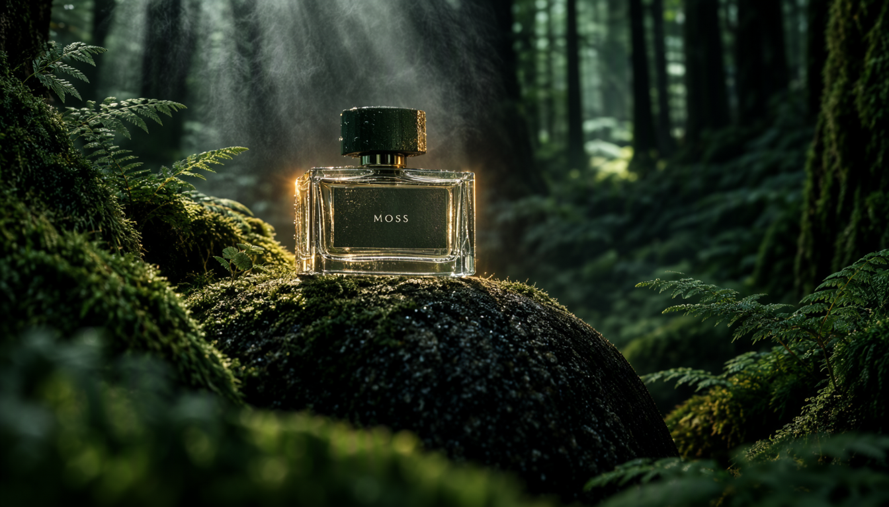
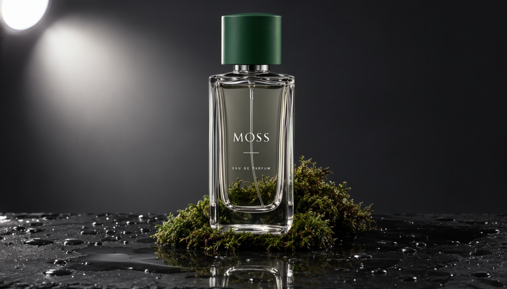
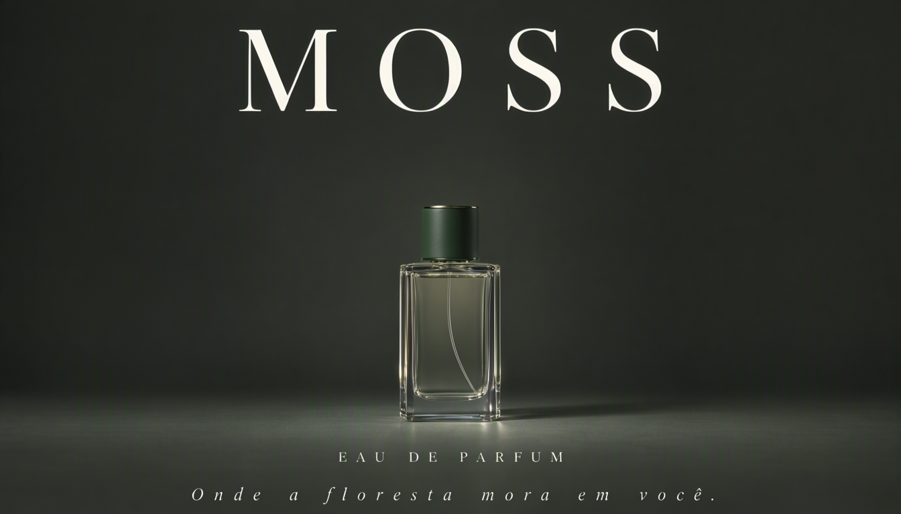
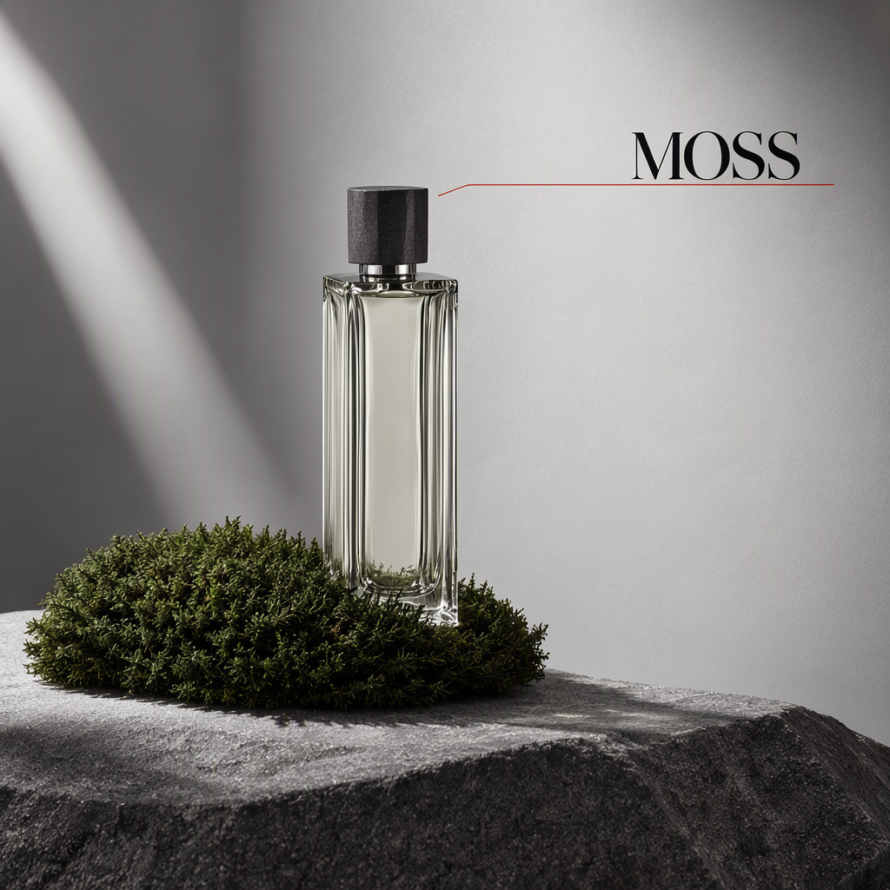
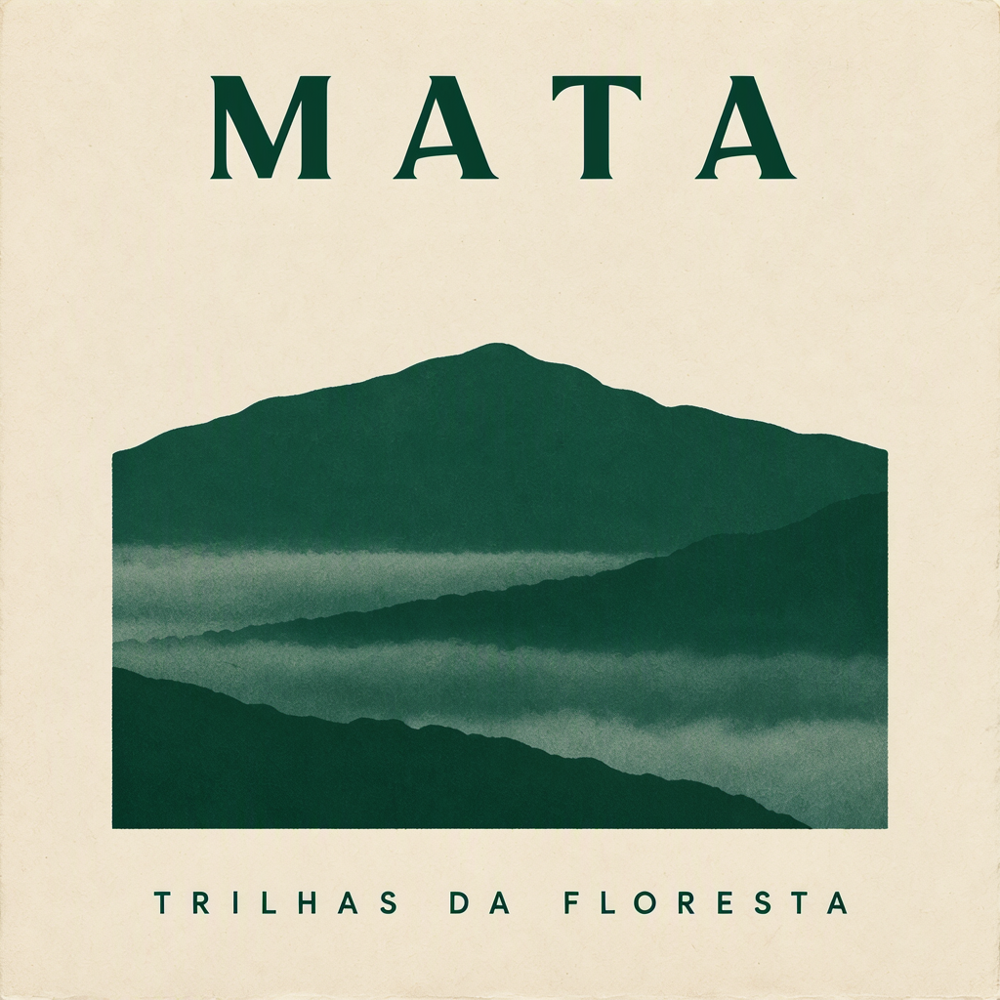
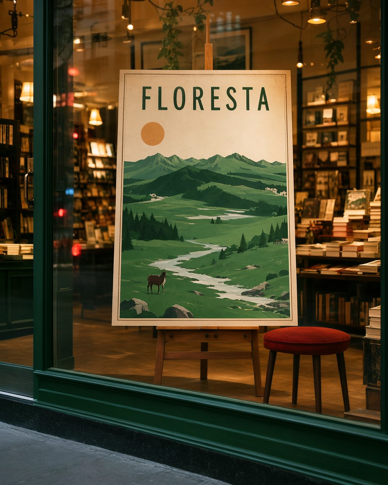

Teste a fundo do modelo de imagem da OpenMOSS (lançado 16/10/2026) direto no pipeline local: stills publicitários com texto renderizado dentro da imagem — inclusive em português com acentos — transformados em um comercial de 20 s com áudio, 100% gerado na RTX 3070 de 8 GB.
Pesquisa · out/2026
MOSS-Image é o modelo texto-para-imagem open-weights da OpenMOSS (grupo open-source ligado à Fudan), lançado em 16/10/2026. É um DiT de 5B parâmetros treinado do zero, com duas versões: Base (para treinar LoRAs) e SFT (recomendada para gerar — a usada aqui). O que o diferencia de FLUX/SD/Qwen-Image para trabalho comercial:
Limitação: apenas text-to-image (sem img2img/edição/vídeo). Ecossistema já grande na Civitai ↗ (checkpoint espelhado, Turbo LoRAs de 8 steps, workflows). A pesquisa completa ↗ está nas fontes do rodapé.
Etapa 1 · Infra
O suporte é nativo a partir do ComfyUI 0.41.3. A engine do workspace (porta 8189) estava na 0.34.0 e foi
atualizada para v0.42.3 (checkout da tag + pip install -r requirements.txt no python embutido
— 2 min). Nenhum plugin instalado.
| Arquivo (HF Comfy-Org/MOSS-Image) | Pasta | Tamanho |
|---|---|---|
moss_image_sft_int8_convrot.safetensors | models/diffusion_models/ | 5,1 GB |
qwen3.5_9b_w4a8_gptq.safetensors | models/text_encoders/ | 6,9 GB |
flux2-vae_small.safetensors | models/vae/ | 238 MB |
Downloads: ~15 min no total. O carregamento dinâmico de VRAM da engine nova comporta os 12 GB de pesos na placa de 8 GB com offload automático — pico medido de 5,7 GB.
{
"1": UNETLoader → moss_image_sft_int8_convrot
"2": CLIPLoader → qwen3.5_9b_w4a8_gptq · type: moss_image
"3": VAELoader → flux2-vae_small
"15": SkipLayerGuidanceDiTSimple (single_layers "22", 0 → 0.5)
"6": EmptyFlux2LatentImage (W×H)
"7": KSampler (25 steps · cfg 2.5 · er_sde · simple)
"8": VAEDecode → "9": SaveImage
}
negative: nsfw, worst quality, bad anatomy, watermark, jpeg artifact
Etapa 2 · Direção de arte
Marca fictícia criada para o teste: MOSS — Eau de Parfum. Cada still saiu em 30–40 s na 3070 (25 steps, pesos int8). Todos os textos foram verificados caractere por caractere — incluindo a tagline em português "Onde a floresta mora em você." com acentos perfeitos, o que nenhum outro modelo local desta máquina conseguia.






{
"summary": { "meta": ["poster"], "canvas": "single",
"caption": "A minimalist luxury fragrance poster on a deep charcoal background
with a clear glass perfume bottle in the center and the brand name
MOSS in large white serif capitals." },
"items": [
{ "label": "text", "text": "MOSS", "bbox": [-350,-320,-210,320] },
{ "label": "object", "bbox": [-80,-75,250,75] },
{ "label": "text", "text": "EAU DE PARFUM", "bbox": [280,-170,315,170] },
{ "label": "text", "text": "Onde a floresta mora em você.", "bbox": [335,-390,370,390] }
],
"bbox_coord_space": "abs_centralized", "bbox_format": "yxyx"
}
// bbox = [y_min, x_min, y_max, x_max] em px relativos ao centro do canvas
Etapa 3 · O filme
Dois takes de 10 s gerados com MiniMax H3 I2V (image-to-video com áudio) a partir dos stills MOSS, montados com o end card em exatos 20 s e upscale para 720p com ffmpeg.
1280×720 · 24 fps · 20,0 s · áudio ambiente gerado pelo próprio H3 + fades
# 1) take2 cortado em 7 s + end card 4 s com zoom lento (zoompan)
# 2) xfade 0,6 s entre os 3 blocos + fade-in 0,4 s / fade-out 0,8 s
# 3) áudio: ambiência dos takes com acrossfade + fade-out no fim
# 4) upscale 832×480 → 1280×720 (lanczos) + leve grão de filme
ffmpeg -i moss_take1.mp4 -i moss_take2trim.mp4 -i endcard_zoom.mp4 \
-filter_complex "[0:v][1:v]xfade=transition=fade:duration=0.6:offset=9.4[v01];
[v01][2:v]xfade=transition=fade:duration=0.6:offset=15.9[v];
[v]scale=1280:720:flags=lanczos,fade=t=in:st=0:d=0.4,fade=t=out:st=19.2:d=0.8"
-map "[v]" ... moss_commercial.mp4
Etapa 4 · Números
| Etapa | Tempo | Obs. |
|---|---|---|
| Update ComfyUI 0.34.0 → 0.42.3 | ~2 min | tag + requirements (frontend 1.55.18) |
| Download dos pesos (12,2 GB) | ~15 min | HF sem token |
| Still MOSS 1344×768 · 25 steps | 30–40 s | pesos quentes; pico 5,7 GB VRAM |
| Take H3 I2V 10 s (243 f · 4 steps) | ~5–6 min | por take, incluindo carga |
| Montagem ffmpeg (20 s · 720p) | < 1 min | xfade + upscale lanczos |